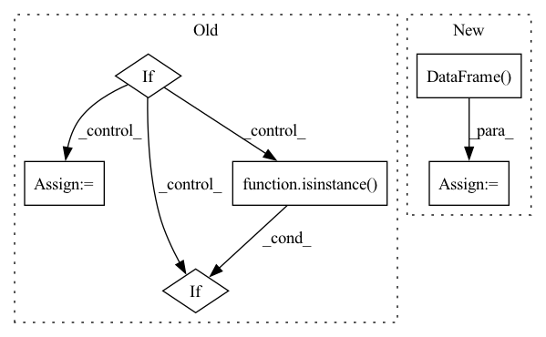

Pattern ID :1260

Before Change
pd.DataFrame, dict
validation data
if isinstance(df, pd.DataFrame):
df_is_dict = False
df_dict = {"__df__": df}
elif isinstance(df, dict):
df_is_dict = True
df_dict = df
else:
After Change
df, _, _, _ = prep_or_copy_df(df)
df_train = pd.DataFrame()
df_val = pd.DataFrame()
if local_split:
for df_name, df_i in df.groupby("ID"):
df_t, df_v = _split_df(df_i, n_lags, n_forecasts, valid_p, inputs_overbleed)
df_train = pd.concat((df_train, df_t.copy(deep=True)), ignore_index=True)
df_val = pd.concat((df_val, df_v.copy(deep=True)), ignore_index=True)
else:
if len(df["ID"].unique()) == 1:
for df_name, df_i in df.groupby("ID"):
In pattern: SUPERPATTERN
Frequency: 4
Non-data size: 6
Instances
Fragment ID: 6304064
Project Name: ourownstory/neural_prophet
Commit Name: 7fcf23557cb5b30885a8a07387d411c61a50a05e
Time: 2022-06-21
Author: mgheorghecr@gmail.com
File Name: neuralprophet/df_utils.py
M Class Name: AnonimousClass
N Class Name: AnonimousClass
M Method Name: split_df(6)
N Method Name: split_df(6)
M Parent Class:
N Parent Class:
M File Name: neuralprophet/df_utils.py
N File Name: neuralprophet/df_utils.py
M Start Line: 924
M End Line: 949
N Start Line: 913
N End Line: 930
'>
Before Change
pd.DataFrame or dict
checked dataframe
if isinstance(df, pd.DataFrame):
checked_df = check_single_dataframe(df, check_y, covariates, regressors, events)
elif isinstance(df, dict):
checked_df = {}
for key, df_i in df.items():
checked_df[key] = check_single_dataframe(df_i, check_y, covariates, regressors, events)
After Change
checked dataframe
df, _, _, _ = prep_or_copy_df(df)
checked_df = pd.DataFrame()
for df_name, df_i in df.groupby("ID"):
df_aux = check_single_dataframe(df_i, check_y, covariates, regressors, events).copy(deep=True)
df_aux["ID"] = df_name
checked_df = pd.concat((checked_df, df_aux), ignore_index=True)
'>
Fragment ID: 6304066
Project Name: ourownstory/neural_prophet
Commit Name: 7fcf23557cb5b30885a8a07387d411c61a50a05e
Time: 2022-06-21
Author: mgheorghecr@gmail.com
File Name: neuralprophet/df_utils.py
M Class Name: AnonimousClass
N Class Name: AnonimousClass
M Method Name: check_dataframe(5)
N Method Name: check_dataframe(5)
M Parent Class:
N Parent Class:
M File Name: neuralprophet/df_utils.py
N File Name: neuralprophet/df_utils.py
M Start Line: 504
M End Line: 512
N Start Line: 495
N End Line: 501
'>
Before Change
if category in f:
df = pd.read_csv(os.path.join(self.static_dir, f), **kwargs)
if attribute is None:
attribute = df.columns
elif not isinstance(attribute, list):
assert isinstance(attribute, str)
return df.loc[df[index_col_name] == int(stn_id)][attribute]
After Change
elif isinstance(categories, str):
categories = [categories]
df = pd.DataFrame()
for category in categories:
fname = None
for f in self.static_files:
'>
Fragment ID: 6304069
Project Name: atrcheema/ai4water
Commit Name: 5445cc5892161a9dd6913bfe95949a02bb3c6678
Time: 2021-02-03
Author: ather_abbas786@yahoo.com
File Name: dl4seq/utils/datasets.py
M Class Name: CAMELS_BR
N Class Name: CAMELS_BR
M Method Name: fetch_static_attributes(6)
N Method Name: fetch_static_attributes(5)
M Parent Class: Camels
N Parent Class: Camels
M File Name: dl4seq/utils/datasets.py
N File Name: dl4seq/utils/datasets.py
M Start Line: 384
M End Line: 399
N Start Line: 471
N End Line: 515